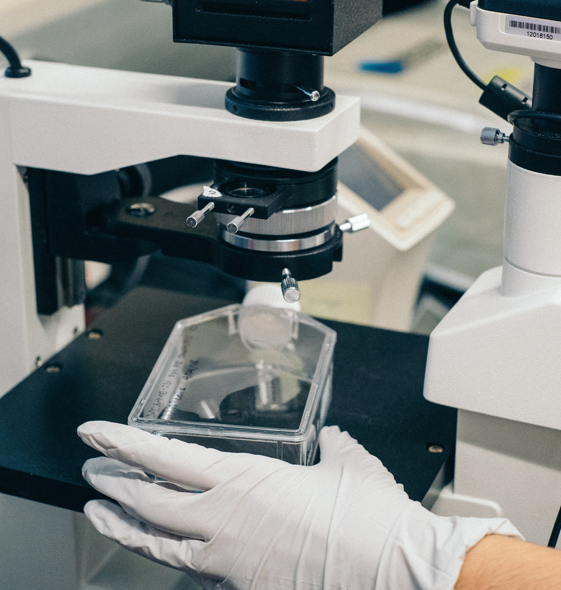

Compétences
Académiques
Au cours de mon parcours universitaire en BUT HSE, j'ai acquis des compétences
techniques et théoriques solides en matière de gestion de la santé, de la sécurité et de
l'environnement dans les organisations. Voici quelques exemples :
Première Année
Analyse des risques : J'ai appris à identifier et à évaluer les risques professionnels et environnementaux en collectant des données pertinentes et en utilisant une réglementation et un corpus documentaire fiables. J'ai également compris comment analyser la subjectivité d'une méthode de cotation des risques, tout cela grâce à la SAE 1.01 et SAE 2.01(vous pouvez retrouver toutes les SAE en cliquant sur ACCUEIL) et aux différents modules que j'ai étudiés, notamment l'introduction aux sciences du danger, la physiologie de la santé au travail et la chimie appliquée aux problématiques HSE.
Maîtrise des risques : Grâce à ma formation, j'ai développé des compétences pour évaluer l'efficacité des actions visant à réduire les risques professionnels et environnementaux. J'ai également appris à planifier les actions en utilisant les trois leviers de maîtrise et en me concentrant sur l'objectif initial. Mes compétences en la matière ont été acquises à travers la SAE 1.02 et 2.02 et l'approche physique des problématiques HSE, ainsi que l'introduction aux sciences du danger.
Gestion d'interventions d'urgence : J'ai acquis des compétences pour organiser et coordonner des interventions d'urgence simples, en utilisant une réglementation et un corpus documentaire fiables. Je sais également recueillir et diffuser les informations pertinentes aux acteurs internes et externes de l'intervention, tout en simplifiant les procédures lors des interventions d'urgence. Ces compétences ont été développées grâce à la SAE 1.03 et 2.03, ainsi que mes cours de chimie appliquée au domaine HSE et de physiologie de la santé au travail.
Animation de la démarche QHSSE : J'ai compris l'importance des valeurs QHSSE (Qualité, Hygiène, Sécurité, Sûreté, Environnement) et j'ai appris à adopter une attitude cohérente avec celles-ci. J'ai participé activement aux réunions et animations de formation/sensibilisation et j'ai acquis des compétences en communication écrite et orale, adaptées à la cible. Ces compétences ont été acquises grâce à la SAE 1.04 et 2.04, ainsi que mes cours de communication et d'anglais.
Deuxième Année
Analyse des risques : Pendant ma deuxième année de formation, j'ai approfondi mes compétences en Analyse des risques professionnels et environnementaux dans un contexte plus complexe tel qu'une structure. J'ai appris à utiliser des méthodes de recueil de données adaptées pour mener une analyse plus précise et fiable. J'ai également compris l'importance de vérifier régulièrement l'évolution des corpus documentaires et règlementaires liés à l'analyse des risques pour s'assurer que l'analyse reste pertinente et à jour.
En outre, j'ai acquis la capacité à justifier les méthodes et les outils d'analyse des risques que j'utilise, en expliquant clairement leur pertinence et leur efficacité. Cela m'a permis de gagner en confiance dans mon travail et de fournir des résultats de qualité. J'ai également appris à justifier le résultat de l'évaluation des risques, en expliquant clairement comment j'ai utilisé les données collectées pour arriver à mes conclusions. Cela s'est fait par l'intermédiaire des SAE 3.01, 3.02 et 4.02 ainsi que des modules comme celui sur les risques liés à l'exposition aux produits chimiques et aux rayonnements.
Maîtrise des risques : J'ai pu consolider mes compétences en matière de maîtrise des risques professionnels et environnementaux dans une structure. J'ai appris à choisir des mesures de prévention et de protection adaptées en prenant en compte leur efficacité, leur pertinence et leur coût. J'ai également appris à m'appuyer sur des indicateurs pertinents pour suivre l'évolution de la maîtrise des risques et mesurer l'efficacité des actions mises en place.
En outre, j'ai développé ma capacité à mener une veille technologique pour mieux maîtriser les risques. Cela m'a permis de rester informé des évolutions technologiques et réglementaires en matière de prévention et de protection contre les risques professionnels et environnementaux.
Enfin, j'ai appris à planifier les actions dans la durée. En effet, la maîtrise des risques ne s'obtient pas de manière instantanée, mais nécessite une démarche continue et durable. J'ai donc appris à établir des plans d'actions à moyen et long terme, à les suivre régulièrement et à les adapter en fonction des résultats obtenus.
Grâce à ces compétences acquises cette année, je suis en mesure de mieux maîtriser les risques professionnels et environnementaux dans une structure. J'ai acquis une vision plus globale et plus stratégique de la maîtrise des risques, ce qui me permettra d'être plus efficace et plus pertinent dans ma future pratique professionnelle. Cela s'est fait par l'intermédiaire des 3.02 et 4.02 ainsi que des modules comme l'environnement de travail et l'analyse de l'activité.
Gestion d'interventions d'urgence : J'ai considérablement amélioré mes compétences en matière de réponse aux situations d'urgence et de crise dans une structure. En plus de mes connaissances de base en préparation de plans d'intervention d'urgence, j'ai appris à collaborer avec les acteurs internes et externes de la structure pour concevoir des plans d'intervention complets et efficaces. Cela implique de travailler en étroite collaboration avec les différentes parties prenantes pour comprendre leurs besoins et leurs rôles dans la réponse aux situations d'urgence.
De plus, j'ai appris à déployer des procédures de gestion des interventions d'urgence pour garantir une réponse rapide et efficace en cas de crise. Cela implique de coordonner les différentes équipes et de veiller à ce que les procédures d'intervention d'urgence soient claires et compréhensibles pour tous. En somme, j'ai appris à mener une réponse coordonnée et efficace aux situations d'urgence et de crise, en collaboration avec les acteurs internes et externes de la structure. Cela s'est fait par l'intermédiaire des 3.03 et 4.01 ainsi que des modules comme les risque technologique lié aux procédés industriels et droit des ICPE.
 Animation de la démarche QHSSE : J'ai acquis des compétences supplémentaires en matière de déploiement de la démarche QHSSE dans une structure. Ainsi, j'ai appris à promouvoir les valeurs QHSSE dans un environnement professionnel en agissant comme un modèle et en encourageant les autres à adopter les mêmes comportements. Je suis capable de préparer et de conduire des réunions et des actions de formation sur les différentes thématiques de la démarche QHSSE, et je sais adapter ces actions en fonction des publics et des contextes.
De plus, j'ai appris à créer des supports de communication adaptés à l'information à diffuser et à la cible. Je sais maintenant identifier les canaux de communication les plus adaptés pour diffuser l'information, que ce soit à l'écrit ou à l'oral, et je peux créer des supports de communication pertinents pour chacun de ces canaux. J'ai obtenu ces compétence grâce aux SAE 3.03 et 4.01 ainsi que les modules sur la démarche d'évaluation des risques professionnels ou l'anglais.
Animation de la démarche QHSSE : J'ai acquis des compétences supplémentaires en matière de déploiement de la démarche QHSSE dans une structure. Ainsi, j'ai appris à promouvoir les valeurs QHSSE dans un environnement professionnel en agissant comme un modèle et en encourageant les autres à adopter les mêmes comportements. Je suis capable de préparer et de conduire des réunions et des actions de formation sur les différentes thématiques de la démarche QHSSE, et je sais adapter ces actions en fonction des publics et des contextes.
De plus, j'ai appris à créer des supports de communication adaptés à l'information à diffuser et à la cible. Je sais maintenant identifier les canaux de communication les plus adaptés pour diffuser l'information, que ce soit à l'écrit ou à l'oral, et je peux créer des supports de communication pertinents pour chacun de ces canaux. J'ai obtenu ces compétence grâce aux SAE 3.03 et 4.01 ainsi que les modules sur la démarche d'évaluation des risques professionnels ou l'anglais.
Utilisation d'un système de management intégré QHSSE : Maintenant, je suis capable d'utiliser un système de management intégré QHSSE. En effet, j'ai acquis des compétences pour analyser le contexte et l'environnement de l'organisation dans sa globalité. Ainsi, je suis capable d'identifier les enjeux liés à la qualité, la santé, la sécurité et l'environnement, ainsi que les parties prenantes et les réglementations applicables. Je peux également alerter la direction sur ses responsabilités en matière de management QHSSE, notamment en matière de prise en compte des risques, des opportunités et de l'engagement des parties prenantes.
Par ailleurs, j'ai appris à évaluer l'efficacité de la politique de management des risques en m'appuyant sur des indicateurs adaptés. Je suis capable d'analyser des données quantitatives et qualitatives pour évaluer les performances de l'organisation et proposer des améliorations en matière de qualité, de santé, de sécurité et d'environnement. Je peux également concevoir et mettre en place des plans d'actions pour améliorer la performance de l'organisation.J'ai obtenu ces compétence grâce aux SAE 3.02, 3.03, 4.01 et 4.03 ainsi que différents modules comme l'introduction au système de management QHSSE.